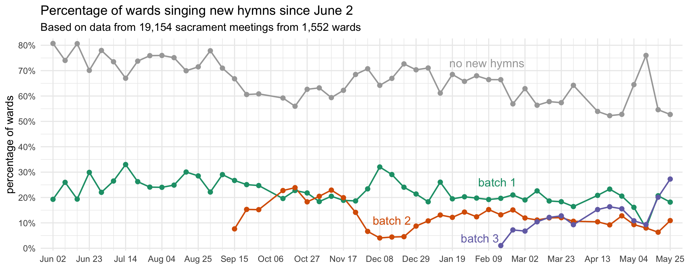
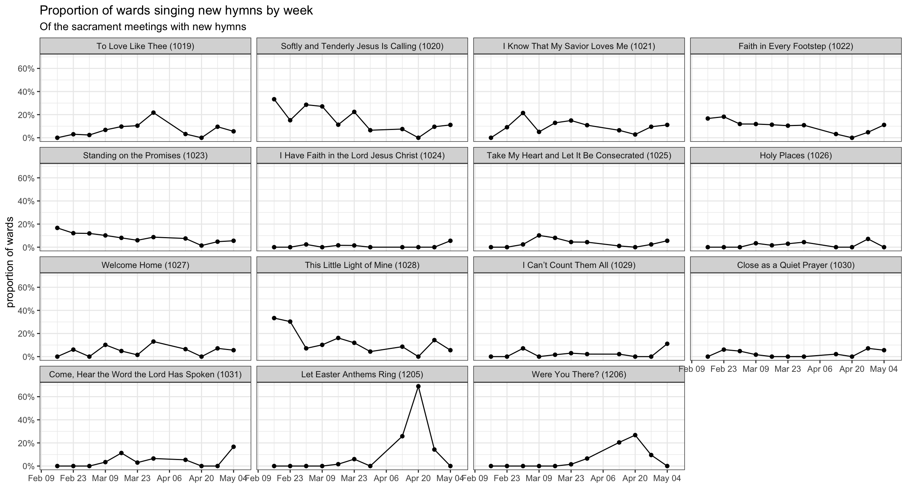

| Number of wards I have data from, by week | |
|---|---|
| Since February 16th | |
| date | wards |
| February 16 | 554 |
| February 23 | 445 |
| March 02 | 569 |
The Third Batch of New Hymns!
general
frequency
new hymns
On February 13th, 2025, the church released the third batch of new hymns. In previous posts, I have covered in detail the first and second batches of hymns and how they were incorporated into sacrament meetings. This page covers period since when the third batch came out. I’ll update this page weekly as I collect more data. Currently I have data from 1,568 sacrament meetings from 770 wards since February 16th.
But first, here’s how much data I have for each week so far, just so you have an idea of what I’m working with.
How many wards sang new hymns each week?
The following plot show what percentage of wards sang from each of the new batches of hymns, per week, since June 2024 when the new hymns started getting rolled out. I’ve included data from all three batches just so you can compare them to each other.

In June, the first batch was readily incorporated into congregational singing. That first week, about 19.8% of the 237 wards I have data from sang one of the new hymns. It stayed pretty consistently about that high for the next three months. During Christmastime, it surged in popularity again, mostly because there were some Christmas hymns introduced in that batch.
When the second batch came out, only about 8.4% of wards sang at least one of those hymns right away. But, that jumped up to 16.4% and eventually peaked five weeks in at 24.3% on October 20. It took a nosedive during Christmastime since there weren’t any Christmas hymns in that batch. After that, it partially recovered in January and early February, hovering around 13% of wards singing from it each week. Meanwhile, the first batch of hymns has almost always been more popular. In October 2024, when the second batch was most popular, the two were about even. Since Christmas, the first batch has consistently been more popular than the second batch.
Now we get to the third batch. If the second batch’s reception was lukewarm, the third batch has been downright cold. On the first week of the third batch, I have data from 554 wards and just 1.1% of them sang one of the brand new songs. The second week was better, with 7.4%, but still far below where the other batches were during their first few weeks. The third week was actually worse, at 6.7%! It’s not like people are no longer singing new hymns; in fact, the first and second batches are going as strong as ever.
That so few wards are singing from this third batch may be due to a few reasons. Perhaps music coordinators have the hymns planned out for the month or quarter already and don’t want to change plans, particularly for the sake of the organists. Maybe the novelty of new hymns has worn off a little bit. I would say maybe because there weren’t any “bangers” like
What hymns are most popular?
The following table shows the hymns from the third batch in order of how popular they are. On the right, I have an approximation of how many wards have sung that hymn since its release.
| Approximate percentage of wards new hymns have been sung in | |
|---|---|
| Since February 16 | |
| Hymn | percent of wards |
| Softly and Tenderly Jesus Is Calling (1020) | 3.5% |
| This Little Light of Mine (1028) | 2.6% |
| I Know That the Savior Loves Me (1021) | 2.3% |
| Faith in Every Footstep (1022) | 1.8% |
| Standing on the Promises (1023) | 1.6% |
| I Can’t Count Them All (1029) | 0.5% |
| Close as a Quiet Prayer (1030) | 0.5% |
| To Love Like Thee (1019) | 0.4% |
| Welcome Home (1027) | 0.4% |
| I Have Faith in the Lord Jesus Christ (1024) | 0.2% |
| Take My Heart and Let It Be Consecrated (1025) | 0.2% |
| Were You There? (1206) | 0.2% |
| Holy Places (1026) | 0% |
| Come, Hear the Word the Lord Has Spoken (1031) | 0% |
| Let Easter Anthems Ring (1205) | 0% |
Even though it has been just a few weeks, I’ve seen almost all the new hymns sung at least once in my dataset. It looks like
(For a complete version of this table that includes all hymns, see here.)
What hymns are most popular each week?
The plot below is not too informative yet because it has only been three weeks, not all the hymns have been sung (at least in my sample), and the overall number of wards singing the new hymns is not high. But we can start to get an idea of what hymns were popular when of the wards that sang them. For now, I’m not going to provide any other commentary until more time has passed.

When during meetings are these hymns sung?
We can now see when during sacrament meetings these hymns have been sung. Again, since I have not seen very many wards singing from this third batch quite yet, it’s difficult to notice any patterns. So this is just a very preliminary look based on just a little bit of data. It is noteworthy though that none have been sung as sacrament hymns.
| When were new hymns sung in sacrament meeting? | |||
|---|---|---|---|
| Since February 15 | |||
| New Hymn | Opening | Intermediate | Closing |
| To Love Like Thee (1019) |
0%
|
50%
|
50%
|
| Softly and Tenderly Jesus Is Calling (1020) |
47%
|
11%
|
42%
|
| I Know That the Savior Loves Me (1021) |
67%
|
8%
|
25%
|
| Faith in Every Footstep (1022) |
40%
|
30%
|
30%
|
| Standing on the Promises (1023) |
56%
|
33%
|
11%
|
| I Have Faith in the Lord Jesus Christ (1024) |
0%
|
0%
|
100%
|
| Take My Heart and Let It Be Consecrated (1025) |
0%
|
0%
|
100%
|
| Welcome Home (1027) |
100%
|
0%
|
0%
|
| This Little Light of Mine (1028) |
27%
|
53%
|
20%
|
| I Can’t Count Them All (1029) |
67%
|
0%
|
33%
|
| Close as a Quiet Prayer (1030) |
0%
|
33%
|
67%
|
| Note: Each row adds up to 100%. | |||
Conclusion
It’s hard to say too much about the third batch of hymns because so few wards have sung those hymns so far. We’re starting to see which are more popular than others, but that could change in the future. What is clear though is the cold reception these hymns have gotten. After three weeks, only a small proportion of wards have sung from this third batch. I suspect the number will go up a little bit, but now I’m not sure! We’ll see next week I guess.